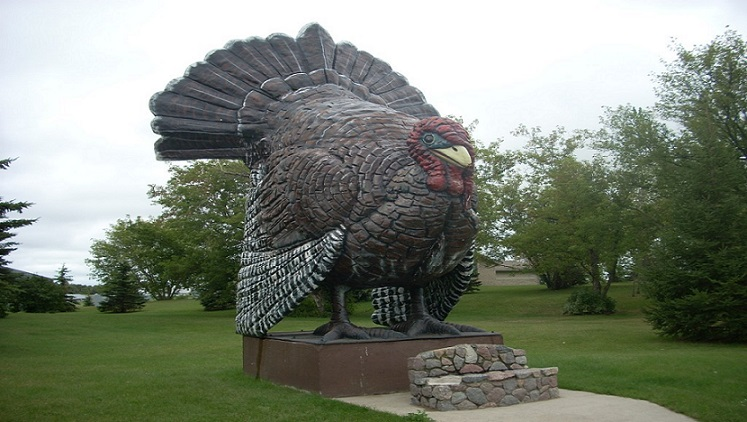

Frazee is home to the world's largest turkey. The turkey was constructed to symbolize Frazee's history of turkey farming, and the turkey industry that resided in and around the area,
this included a turkey hatchery and turkey processing plant that a lot of the citizens of Frazee worked at.
The statue that you can visit today was built in 1998 after the original one burnt down early that year while workers were performing maintenance on the metal frame inside the statue,
the blowtorch that was being used sent off a spark that ignited the paper mache body of the statue on fire.
Frazee is also known for its high school wrestling team, and how well they have done throughout the years and its annual turkey days event that is held there every summer.